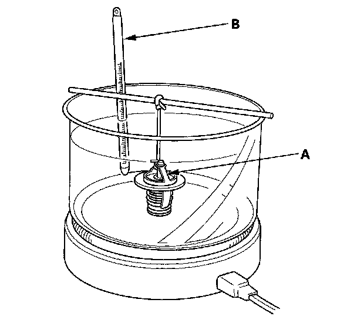

Thermostat: Testing and Inspection
Thermostat TestReplace the thermostat if it is in the stuck open position at room temperature.
To test a closed thermostat:
1. Suspend the thermostat (A) in a container of water. Do not let the thermometer (B) touch the bottom of the hot container.

2. Heat the water and check the temperature with a thermometer. Note the temperature at which the thermostat first opens, and at which it is fully open.
3. Measure the lift height of the thermostat when it is fully open.
Standard Thermostat
Lift Height: Above 10.0 mm (0.39 in.)
Starts Opening: 169-176° F (76-80° C)
Fully Open: 194° F (90° C)